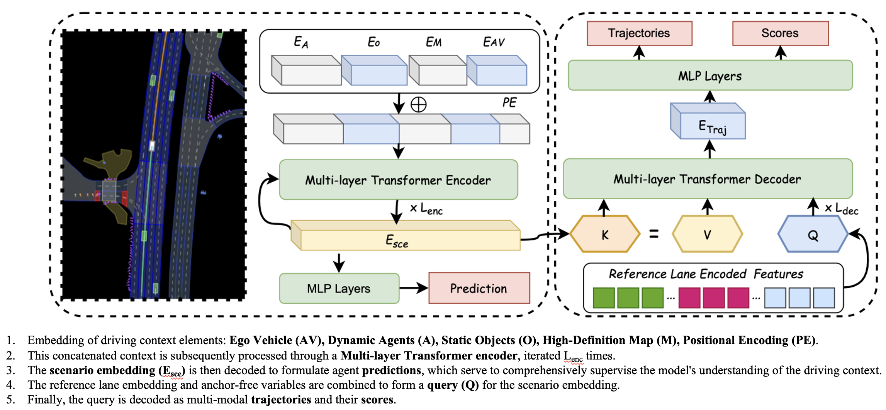
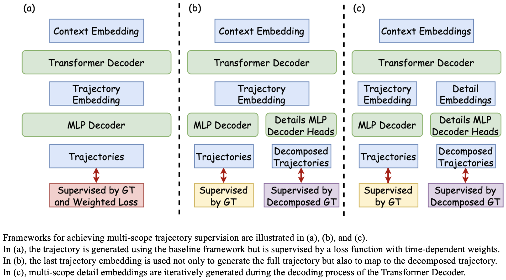

Method Overview
Problem Identification


Model Framework

Candidate Approaches

Comparison between PLUTO-m12-C (left), PlanScope-Th20-m12-C (mid) and our method PlanScope-timenorm-m12-C (right).
PLUTO fails to make a timely response to the impending collision in the short-term, but chooses to continue along the long-term decision, Th20 fails to make predictive decision, while PlanScope makes the timely yielding maneuver.
PLUTO adopts a conservative decision due to the high uncertainty of the future trajectory caused by interaction with the rear vehicle in a long time horizon, while PlanScope successfully adopts human-like lane change decision.
In the above scenario, planning considering PlanScope can enhance the precision of vehicle control and reduce the deviation from the reference route.
Similar to the previous scenario, considering PlanScope enables more precise adjustments of driving status and timely return to the reference lane. However, for PLUTO, its pursuit of long-term targets even leads to deviation between the starting point of the planning trajectory and the current position of the self-driving vehicle.
Experiments conducted on 20% of nuPlan dataset and evaluated on Random14 test dataset. From where we can observe: Too long and too short horizon both result in worse performance. Temporal loss weighting works. Time dependent normalization is compatible with contrastive learning. MDD+DWH and IDD+DWT are also able to surpass baseline.